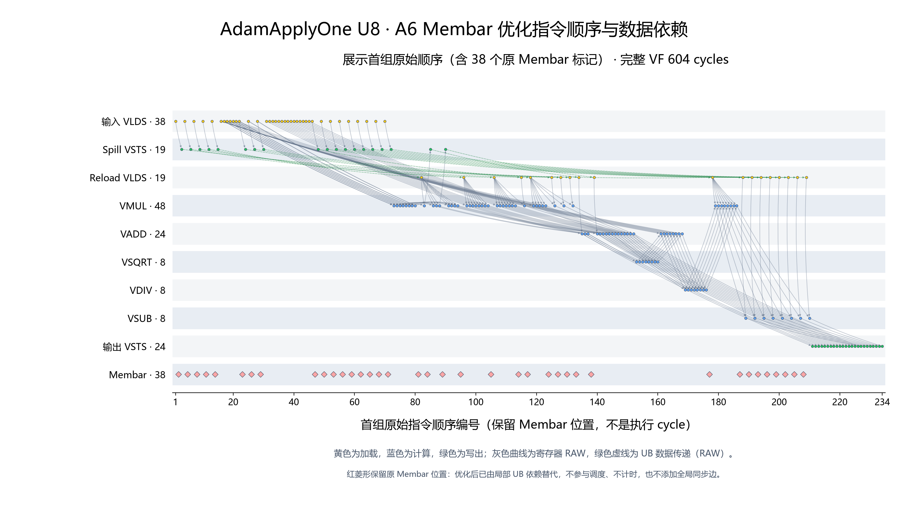
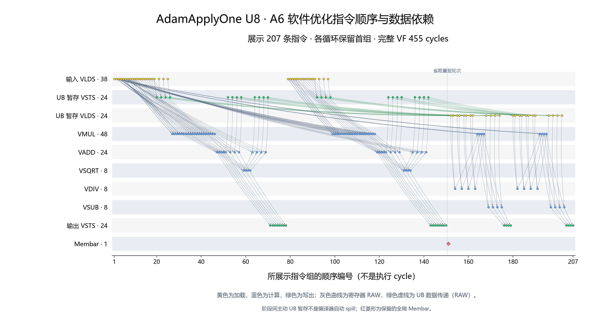
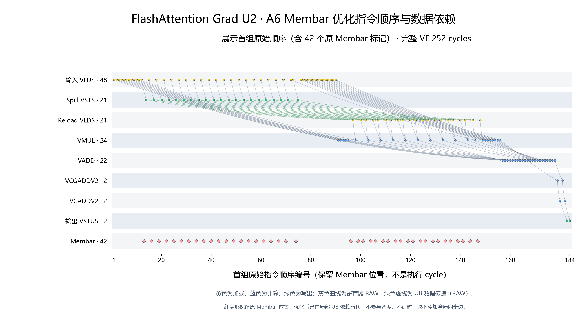
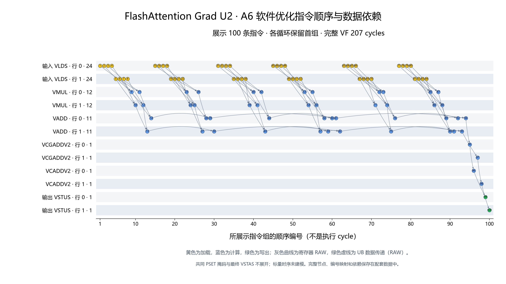
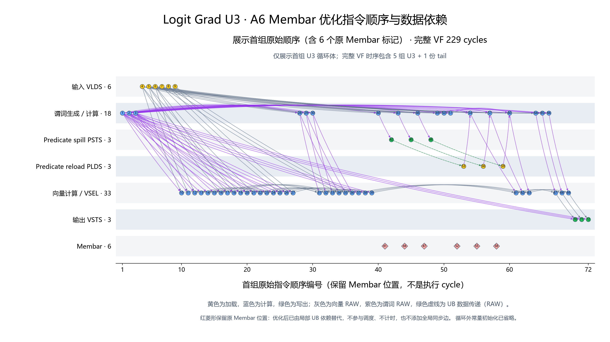
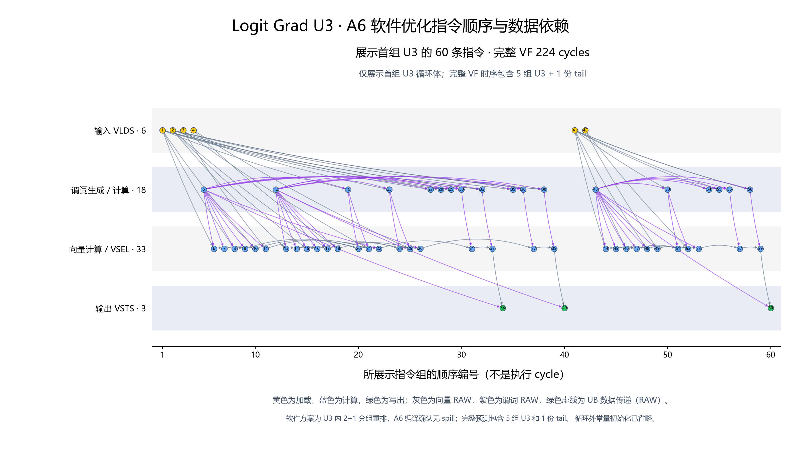
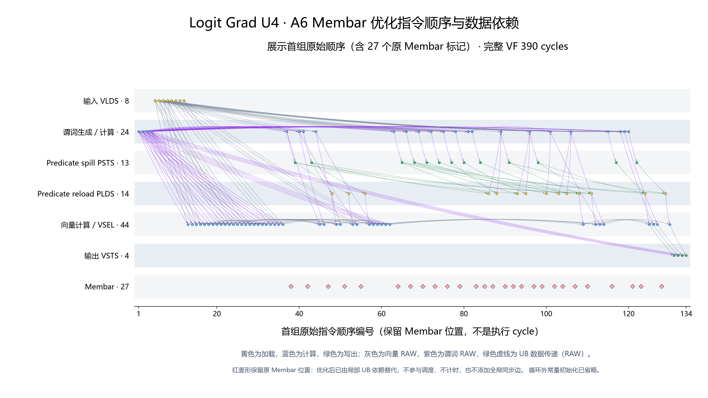
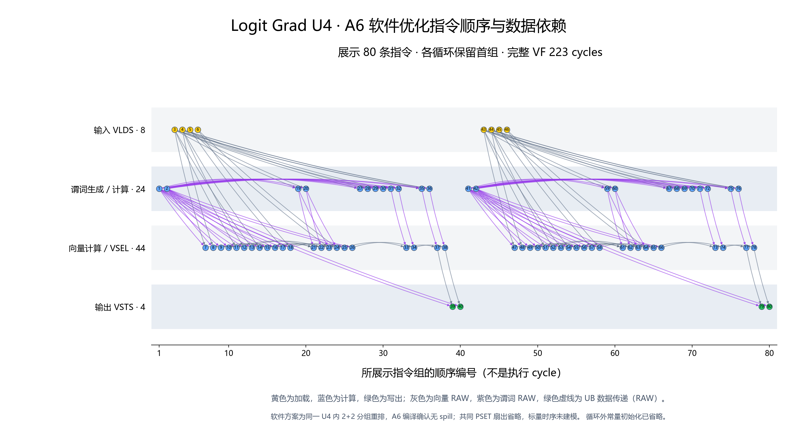
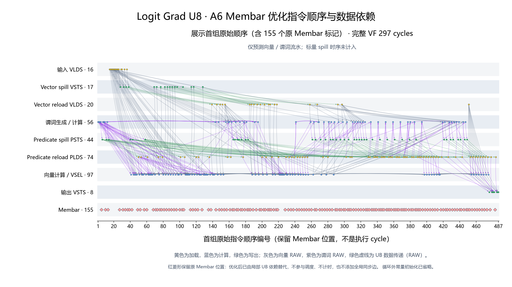
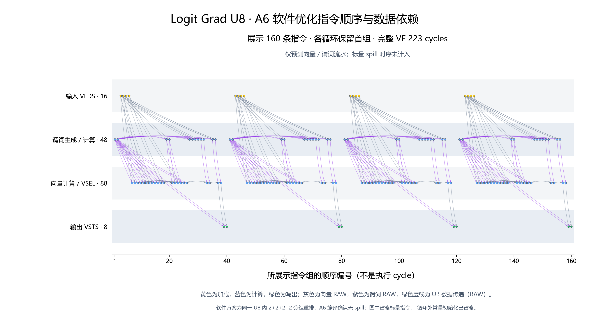

固定 A6 / DV121 模型提交 336844700d704bc3afdc4b190b215e736b65ebc9。横轴是指令顺序，不是时间；黄色为加载、绿色为写出、蓝色为计算。只画数据流，不画 WAR/WAW 地址复用约束；原 Membar 的红菱形在局部依赖图中仅作位置参考，不参与调度和计时。
| Case | Membar 优化 / cycles | 软件优化 / cycles | 口径 |
|---|---|---|---|
| AdamApplyOne U8 | 604 | 455 | 软件方案保留阶段间主动暂存和全局屏障。 |
| FlashAttention Grad U2 | 252 | 207 | 软件方案采用 Bank-aware 顺序。 |
| Logit Grad U3 | 229 | 224 | 软件采用 2+1 分组；整段预测含最后 1 份 tail。 |
| Logit Grad U4 | 390 | 223 | 软件采用 2+2 分组，实际并行程度接近 U2。 |
| Logit Grad U8 | 297 | 223 | 原始版忽略 57 条 SSTI 和 57 条 SLDI 的标量时序；软件采用 2+2+2+2 分组。 |
图中为首组循环体，周期是整段模型结果。模型均不计时标量流水；297 cycles 不是完整硬件 VF 周期。A6 软件方案通过 VF 编译无 spill 检查，但未做 A6 simulator 数值验证。详情见 核验及复现说明。









